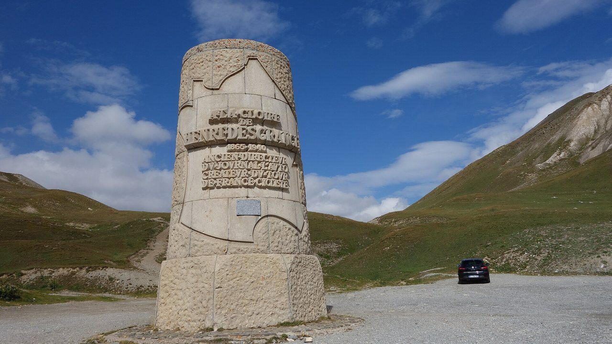

Race, Col du Galibier

Behind
Best +0:01
371W
Target 418 W-47 W
- Cadence
- 87rpm
- Heart
- 140bpm
- Speed
- 26.5km/h
Recover18 of 20
1:44
Next: · 4:00 at level 22
+2.5%
841 m climbed
22.36 km
11
Resistance / 32
Solo races your best-time ghost: position reads Ahead or Behind, and solo alone gets a Pause button. Frozen at 51:16.